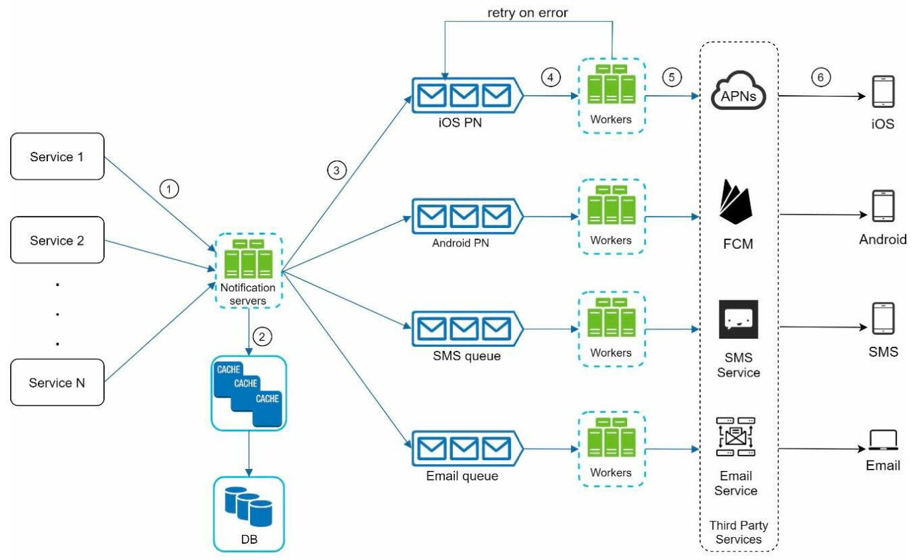

System Design Interview¶
- basic calculations
- 1 byte / 1B = 8 bits
- an ASCII character uses 1B
Template¶
System Design Interview: A Step-By-Step Guide
- clarify requirements
- features
- expected traffic
- consistency vs. availability
- do we need ACID or just eventual consistency
- do we need high availability
- acceptable latency
- read-to-write ratio
- for a social network, users who don't react/post vs. users who do
- content type & size
- video platform - how long is the video?
- estimations
- on storage
- high level design and ask for feedbacks
- identify potentially challenging components and deep dive
- find 2 solutions, discuss tradeoffs, discuss with the interviewer
- What kinds of data do we need to store? What's the best db for each?
- big files like image/video -> S3
- if low latency is required, we can use a queue
- load balancer placements
- between clients & applicaton servers
- between applicaton servers & db servers
- between applicaton & cache servers
- others
- operations
- monitoring
- metrics
- QPS
- latency
- logging
- metrics
- deployments
- monitoring
- telemetry
- operations
- wrap-up
URL Shortener¶
Educative.io solution
System Design Primer solution
- requirements
- custom link?
- private links?
- update/delete by users?
- traffic?
- 100M new URLs a day -> 365B for 10 years
- multiple short links for a long url?
- default expiration time?
- remove long unused links?
- telemetry/analytics?
- APIs
POST /api/v1/shorten- return short url
GET /api/v1/<shortUrl>- return long url for redirection
301 redirect- permant redirection, so subsequent requests to the short url will be redirected immediately without calling the short url service302 redirect- temporary redirection, so subsequent requests to the short url will be still call the short url service
- return long url for redirection
- schema
- link table
- short link 7 chars -> 7B
- is use bae62 -> \(62^7\) = 3.5T unqiue urls
- expired_at 5 chars -> 5B
- created_at 5 chars -> 5B
- original url 512 chars -> 512B
- 530B for a record -> 5.3B for 10M records
- short link 7 chars -> 7B
- user table
- link table
- database
- selecting a db
- since we don'e need relationships and are expecting high traffic, we can use a NoSQL db for the scalability & availability
- scaling
- selecting a db
- to generate unique urls
- counter
- complicated with horizontal scaling
- random -> base62
- may have collision
- ip address + timestamp or the long url -> md5 -> base62
- very low chance of collision
- check if collision exists with bloom filter
- md5
- base62
- 26+26 english letters & 10 numbers
- make a number into 62-based
- base64
- base62 with
+&/ - not suitable for a url
- base62 with
- very low chance of collision
- a dedicated key generation service & db
- System Design#Unique ID Generator
- generate keys and store in key db
- when we need a new url just fetch a generated one from db
- pros
- fast
- don't need to worry about collisions
- cons
- complexity for dealing with concurrency
- e.g. 2 servers trying to fetch the same key
- single point of failure, or additional complexity of #replication
- complexity for dealing with concurrency
- counter
- expired links cleanup
- options
- on-demand
- check expiration when accessed, if expired then delete and return error
- cronjob to remove expired links
- on-demand
- if using a key generation service & key db, recycle the key by putting it back to the db after link is deleted
- options
Web Crawler¶
- usages
- search engine indexing
- web archiving
- data mining
- web monitoring
- e.g. discover piracy
- requirements
- purpose: search engine indexing
- traffic: 1B we pages a month
- HTML only
- only consider newly added or edited web pages
- store HTML up to 5 years
- ignore duplicate content
- characteristics
- scalability
- robustness
- handle bad HTML, unresponsive servers, malicious links, etc.
- politeness
- reasonable request rate on a host
- extensibility
- flexible for new requirements
- e.g. store image as well
- flexible for new requirements
- estimation
- 1B per month -> 400 QPS
- peak QPS = 400x2 = 800
- assume average web page size 500KB
- 50KB x 1B = 500TB of storage per month
- 500TB x 12 x 5 = 30PB for 5 years
design¶
- select seed URLs
- select it based on
- locality
- topics
- e.g. the seed URL of a university is its domain name
- select it based on
- URL frontier
- a FIFO queue for URLs to be downloaded
- BFS
- ensure politeness - only download 1 page at a time from a host
- map each host to a download thread
- proiritizer - determine URL priority
- use PageRank, traffic etc.
- assign URLs into queues of different priorities
- queues with higher priority would have a better change of being selected

- ensure freshness - keep updated
- recrawl based on web pages' update history
- recrawl important pages more frequently
- HTML downloader
- download HTML
- check
Robots.txt(Robot Exclusion Protocol) to check pages allowed to be downloaded- cache it
- DNS Resolver
- URL -> IP addres
- content parser
- parse HTML
- we need server-side rendering / dynamic rendering before parsing because many links are dynamically generated with JS
- content seen
- 26% of web page are duplicated contents
- compare hash values of 2 web pages
- content storage
- most on disk
- popular content in memory
- URL extractor
- extract links from HTML
- URL filter
- ignore some URLs based on content types, extensions, blacklist etc.
- URL seen
- keep track of visited URLs
- hash table or bloom filter
- URL storage
- store visited URLs
performance optimization¶
- distributed crawl
- cache DNS Resolver
- DNS requests are often synchronous, so can be a bottleneck
- cache the domain -> IP mapping, update periodically with cronjob
- locality
- distribute crawl servers close to the hosts
- short timeout
Robustness¶
- #Consistent Hashing for #Load Balancing
- save crawl states and data
- restart a crawl by loading the states and data
- exception handling
- data validation
- avoid spider traps
- exclude noise
Extensibility¶
We can easily add new features by plugging in new modules
Notification System¶
- requirements
- notifications to support
- push notification
- SMS message
- soft real time, accepting slight delay
- supporting devices
- iOS, andriod, laptop, desktop computer
- trigger
- client app
- server-side
- user can opt-out
- traffic
- 10M push notifications
- 1M SMS
- 5M emails
- notifications to support
types of notifications¶
- iOS push notification
- provider builds and sends request to APNS (Apple Push Notification Service)
- request contains device token & payload
- provider builds and sends request to APNS (Apple Push Notification Service)
- Android push notification
- sends request to FCM (Firebase Cloud Messaging) instead of APNS
- SMS message
- use 3rd party services e.g. Twilio, Nexmo
- email
- use 3rd party services e.g. Mailchimp, SendGrid
- or set up own email server
gathering contact info¶
- save user contact info when the user first downloads the app or signs up
usertable &devicetable- a user can have multiple devices
design¶
initial version
- notification system
- provide APIs to services
- basic validations
- build and send requests to third party notification services
- third-party services
- note that some may be unavailable in some space and time
scaled version

- notification servers
- fetch data from cache or DB
- push notification data to message queues
- cache
- user info, device info, notification templates
- message queues
- a message queue for each notification type
- workers
- pull notification events from message queue, build the requests, and send to third-party service
Reliability¶
- cannot have data loss
- retry if failed
- worker fails to send -> put back to message queue
- to prevent duplicates, check event ID first and ignore already processed ones
additional considerations¶
- notification template
- many notifications follow a similar format
- use preformatted notification template with customizable parameters to avoid building every notification from scratch
- improve consistency & efficiency
- notification setting
- respect users' notification settings
(user_id bigInt, channel varchar, opt_in boolean)- check if user is opted in for this notification type (channel) before sending
- rate limiting
- limit the number of notifications a user can receive
- security
- our APIs requires authentication
- monitor message queues
- if too many in the queue, add more workers
- events tracking
- tracking open rate, click rate, and engagement for notifications sent
News Feed¶
alt: Twitter Timeline
requirements¶
- both mobile & web
- features
- publish a post
- see followers' posts
- sorting
- by reverse chronological order
- friends limit
- 5k a user
- traffic
- 10M DAU (daily active users)
- types
- text, images, and videos
APIs¶
- publish API
POST /v1/me/feed- params
contentauth_token
- retrieve API
GET /v1/me/feed- params
auth_token
Design¶
publishing a post
high level
detailed
- web servers
- enforce authentication & rate-limiting
- fanout service
- for building news feed
- notification service
- send notifications to followers
building newsfeed
high level
detailed
- news feed service
- fetch post IDs & user IDs from news feed cache
- fetch post & user details from post & user cache
- construct news feed and return
- cache
Fanout Service¶
Fanout Approaches
- fanout on write (push)
- publish a post -> insert into the cache of each of the follower's cache (build news feed)
- pros
- fetching news feed (read) is fast
- cons
- hotkey problem: if the user has a lot of followers, fetching followers list and building news feed for all is time consuming
- resource wasting to build news feed for inactive followers
- fanout on read (pull)
- build news feed on read (on-demand)
- pros
- on-demand so won't waste resource on inactive users
- cons
- slow to fetch news feed
- may need complex join
- slow to fetch news feed
- hybrid
- use push for normal users, pull for celebrities
- read -> fetch the prebuilt news feed and pull contents from celebrities
Fanout Flow
- fetch follower IDs from graph db
- fetch followers info from user cache, and filter out muted ones (or those the user doesn't wish to share this post with)
- send followers list & new post ID to message queue
- fanout workers fetch data from message queue
- insert news feed data
(post_id, user_id)to news feed cache- store only IDs to prevent large memory consumption
- won't have cache miss unless user scroll through thousands of posts
Chat System¶
requirements¶
- type: 1v1 & group chat
- platform: mobile & web
- traffic: 50M DAU
- group member limit: 100
- features
- 1v1 chat
- group chat
- online indicator
- only text
- message limit: 100k characters
- no end-to-end encryption
- chat history: forever
communication protocol¶
- polling
- client periodically asks server if there's message
- cons
- costly
- resource wasting
- long polling
- client sends a long polling request -> server holds the connection open until there's a new update -> server responds with the update and the connection is closed (customary for HTTP) -> client sends a new long polling request
- if server timeout and close the connections, client will immediately sends a new long polling request as well
- cons
- if using load balancing the server receiving a message from the sender may not have the long polling connection with the intended receiver
- server doesn't know if the client is still there
- still inefficient
- client sends a long polling request -> server holds the connection open until there's a new update -> server responds with the update and the connection is closed (customary for HTTP) -> client sends a new long polling request
- websocket
- bi-directional
- persistent (unlike HTTP)
- use websocket for both sender - server & server - receiver
- the most used
design¶
- chat service is stateful because each client has a persistent websocket with a chat server
- use 3rd party service for push notification
- chat servers
- send/receive messages
- presence servers
- online/offline status
- API servers
- login, signup, profile settings, etc.
- notifications servers
- key-value stores
- chat history
data storage¶
- user data in RDBMS
- use #Replication (#Leader-Based Replication) & #Sharding to satisfy availability & scalability
- chat history in #Key-Value Store
- requirements
- chat data is enormous
- only recent chats are accessed frequently
- support searching (random access of data)
- read-to-write ratio about 1:1
- why #Key-Value Store
- horizontal scaling
- low latency
- RDBMS doesn't handle long tail of data well, random access is expensive once index grows large
- used by other chat systems
- e.g. Facebook Messenger users HBase, Discord uses Cassandra
- 1v1 chat schema
- use
message_idto decide message order becausecreated_atmay collide
- use
- group chat schema
- composite pk of
(channel_id, message_id) - use
channel_id(group id) as the partition key
- composite pk of
message_idgeneration- see #Unique ID Generator
- properties
- unique
- newer one has bigger value
- approaches
- #Snowflake (Twitter)
- local auto increment within a group
- requirements
deep dive¶
- service discovery
- find the best chat server for a client
- based on location, capacity, etc.
- e.g. Apache Zookeeper
- find the best chat server for a client
- 1v1 message flow
- flow
- user A sends a message to chat server 1 with websocket
- chat server 1 obtains a message ID from the ID generator
- chat server sends the message to the message queue
- message stored in key-value store
- if user B is online, sends the message to its server, chat server 2
- if user B is offline, push notification servers send a push notification to user B
- chat server 2 sends the message to user B with websocket
- flow
- message sync across devices for the same user
- each device has a websocket to the same server
- each device maintains the last message id on the device
- if the incoming message's id is bigger, it's a new message
- small group chat message flow
- new message is sent to the message queue of every other group members
- becomes expensive once group is large
- online presence
- websocket between client & presence server
- login/logout -> presence server saves status & timestamp to key-value store
- disconnection
- client sends heartbeat to presence server periodically
- timeout -> mark as offline
- fanout
- when online status change, publish even to the channel for each group member
- websocket
- expensive for large group
- use on-demand fetch instead
- when online status change, publish even to the channel for each group member
extension¶
- media files
- compression, cloud storage, thumbnails
- end-to-end encryption
- client-side caching
- message resent
Search Autocomplete System¶
- requirements
- position: only at beginning
- suggestions to return: 5
- ordering: historical query frequency
- spell check?
- no spell check or autocorrect
- estimation
- 10M DAU
- average 10 searches each person
- 20B per query (5char x 4w)
- 20 requests per query (each char input results in a query)
- 10M x 10 x 20 = 2B queries a day = 24k QPS
- peak QPS = 24k x 2 = 48k
- assume 20% queries are new -> 10M x 10 x 20B x 20% = 400MB new data added to storage daily
Small Scale Design¶
- data gathering service
- gather user input and aggregate in real time
- store as a frequency table
(query, search frequency)
- query service
- return most frequently searched terms from a prefix
- use SQL
LIKE prefix% ORDER BY frequency- inefficient in big scale
Scalable Design¶
- trie
- add frequency info into a regular trie
- \(O(p+c\log c)\) time to get top k most searched queries from a prefix
- \(p\) = length of prefix
- \(c\) = num of the decendents / subtree nodes of the prefix
- \(O(p)\) to traverse the prefix
- \(O(c)\) to get all the subtree nodes and their frequency
- \(O(c\log c)\) to sort by frequency and get the top \(k\)
- you can probably do it in \(O(k\log k)\) with a heap tho
- \(O(1)\) read time with optimizations
- set prefix max length
- set as a small constant like 50 -> reduce \(O(p)\) to \(O(1)\)
- cache top search querie at each node
- trading space for time
- \(O(1)\) to retrieve top k in subtree if cache hit
- set prefix max length
- data gathering service
- update trie in real time is impractical
- high latency if traffic is high
- top k may not change much over time, so it's inefficient to update trie frequently
- how up to date depends on use case
- Twitter requires up to date suggestions
- Google not so much
- analytics logs
(query, timestamp)- append-only
- not indexed
- aggregators
- high aggregate frequency -> more up to date
- aggregate logs into frequency table for each time period
(query, frequency, timestamp)
- workers
- build the trie from the aggregated data and save to trie DB periodically
- async
- trie cache
- distributed cache for fast read
- periodic snapshot of trie DB
- trie DB
- option - key-value store
- hashmap representation of trie
- option - document store
- serialized periodic snapshot of trie
- option - key-value store
- update trie in real time is impractical
- query service
- to optimize query speed
- AJAX
- browser caching
- save autocomplete suggestions to browser cache with some TTL
- data sampling
- only log 1 out of \(N\) request to save resource
- to optimize query speed
- trie management
- create/update from aggregated data
- update
- option - update trie directly
- slow if big
- option - build new trie periodically and replace old trie
- option - update trie directly
- delete bad suggestions
- add a filter layer between API servers & trie cache
- bad suggestions are removed from trie DB async as well
- sharding
- shard the trie if too big
- option - range-based
- may have uneven distribution
- option - shard map
- analyze historical data distribution
extension¶
- multi-language support
- use unicode for trie
- locality
- build different tries for different countries, storing in CDNs
- trending search queries (real-time)
YouTube¶
alt: TikTok
- requirements
- features: upload & watch videos
- clients: mobile apps, browsers, smart TV
- traffic: 5M DAU
- average daily time spent for a user: 30min.
- a lot of international users
- accept most video resolutions & formats
- needs encryption
- file size max: 1GB
- can use public cloud
- estimation
- 5M DAU
- average video size 300MB
- storage
- 10% of users upload 1 video per day
- storage needed 5M x 10% x 300MB = 150TB
- CDN cost
- users watch 5 videos a day on average
- $0.02 per GB transferred
- 5M x 5 x 0.3GB x $0.02 per GB = $150K per day
design¶
See Computer Networks#video streaming also
- CDN
- store and stream videos to users
- API servers
- handle everything except streaming video
- feed recommendation
- generate video upload URL
- update metadata DB & cache
- user signup
- etc.
video uploading¶
- metadata DB
- stores video metadata
- #Sharding & #Replication for performance & availability
- metadata cache
- caches video metadata for better performance
- original storage
- stores the original videos
- blob storage
- S3
- transcoding servers
- convert to various formats for various devices & bandwith
- transcoded storage
- stores transcoded video files
- blob storage
- S3
- CDN
- caches videos
- completion queue
- message queue for video metadata
- completion handler
- workers for pulling metadata from completion queue and update to metadata cache & DB
- API servers
- notify user that the video is uploaded
- update metadata
video streaming¶
- stream from closest CDN edge server
- streamin protocols (see Computer Networks#video streaming#streaming protocols)
- MPEG-DASH
- Apple HLS
- Microsoft Smooth Streaming
- Adobe HTTP Dynamic Streaming
video transcoding¶
- transcode into different bitrates for users with different bandwidths & network conditions
- transcode into different formats for compatibility
- container
- e.g.
.mp4.mov.avi
- e.g.
- codecs
- compression/decompression algo
- e.g.
H.264HEVCVP9
- container
- DAG (directed acyclic graph) model for transcoding pipelines
- like a CICD pipeline
- tasks
- inspection
- validation
- video encoding
- into different resolutions / codecs / bitrates
- adding thumbmail
- user uploaded or system generated
- adding watermark
- inspection
- architecture
- preprocessor
- split video
- split into GOP (Group of Pictures) i.e. small chunks of frames
- generate DAG
- generate DAG pipeline from config files
- cache data
- cache GOPs & metadata
- retry with cache when encoding fails
- split video
- DAG scheduler
- split DAG pipeline into stages of tasks and put them into task queue
- resource manager
- task scheduler
- pick the most important task from task queue
- pick the best worker from worker priority queue
- dispatch the chosen task to the chosen worker
- put the task & worker into running queue
- remove the task & worker info from running queue when done
- task queue
- priority queue with TODO tasks
- worker queue
- priority queue with worker utilization info
- running queue
- info about currently running tasks & worker
- task scheduler
- task workers
- run the assigned tasks
- temporary storage
- cache metadata in memory
- frequently accessed my workers
- small
- put video & audio in blob storage
- data removed once video done
- cache metadata in memory
- preprocessor
optimizations¶
- parallel video uploading
- client splits video into GOPs / small chunks and upload in parallel
- place upload server close to users
- async with message queues
- s.t. each module not dependent on each other, can execute tasks in parallel
- cost optimization from historical patterns
- only cache popular videos on CDN
- serve normal videos from video servers
- Youtube videos have a long-tail distribution i.e. a lot of videos have almost no viewers
- fewer versions encoded for non-popular videos
- short videos encoded on-demand
- locality
- no need to distribute regionally popular videos to the world
- build your own CDN and partner with ISPs
- only cache popular videos on CDN
security¶
- presigned URL
- API servers give user a dedicated URL to upload to S3
- called "Shared Access Signature" for Azure Blob Storage
- copyright protection
- DRM (digital rights management) systems
- e.g. Apple FairPlay, Google Widevne, Microsoft PlayReady
- AES encryption
- can authorized users can decrypt
- visual watermark
- DRM (digital rights management) systems
error handling¶
- recoverable error
- retry a few times before returning proper error code
- e.g. encode failures
- non-recoverable error
- return proper error code
- e.g. malformed video format
- common error handlings
- upload error: retry
- split video error
- if old clients can't split videos, pass the entire video to server and split server-side
- transcoding error: tretry
- preprocessor error: regenerate DAG pipeline
- DAG scheduler error: reschedule
- resource manager queue down: use replica
- task worker down: retry task on another worker
- API server down: redirect request to another server
- metadata cache server down: read from another
- metadata DB server down
- #Leader-Based Replication
- leader down -> promote a follower to leader
- follower down -> read from another
Google Drive¶
alt: DropBox, OneDrive
- functional requirements
- features: upload, download, sync, notifications
- platforms: mobile & web
- file formats: all
- encryption: files need to be encrypted
- file size limit: 10GB
- traffic: 10M DAU
- non-functional requirements
- reliability: no data loss
- latency: fast sync speed
- bandwidth: low bandwidth used, especially for mobile users
- scalability
- availability: available when some servers down, slowed down, or have network errors
- estimation
- 50M users, 10M DAU
- each user has 10GB free space
- average user upload 2 files a day
- average file size 500KB
- read-to-write 1:1
- storage needed = 50M x 10GB = 500PB
- upload QPS = 10M x 2 / 86400 = 240
- peak QPS = 240 x 2 = 280
simple design¶
- storage system
- store files under
/drive
- store files under
- web server
- upload API
- simple upload
- resumable upload
POST /files/upload?uploadType=resumable
- download API
GET /files/download- params:
{"path": <download file path>}
- get file revisions API
GET /files/list-revisions- params:
{"path": <download file path>, "limit": 20}
- upload API
- metadata DB
- user data, login info, files info, etc.
scaling
- load balancer with dynamic web servers
- metadata DB with replication & sharding
- file storage using S3
- replication
- same-regions
- cross-region
- replication
#Resolving conflicts: first-to-write wins, the later one receives a conflict, to be resolved manually by user
scalable design¶
- block servers
- split files into blocks and upload to cloud storage
- compress & encrypt the blocks before uploading
- each block has a hash value stored in metadata DB
- recontruct a file by joining blocks
- cloud storage
- cold storage
- store inactive files
- load balancer
- API servers
- metadata DB
- metadata for users, files, blocks, versions, etc.
- metadata cache
- notification service
- notify when a file is added/edited/removed
- uses long polling
- websocket also works but it's more suitable for bi-directional real-time communications
- offline backup queue
- store and sync the changes when client is back online
block servers¶
flow
optimizations
- delta sync
- when a file is modified, only sync the modified blocks to cloud storage
- compression
- each block is compressed
- different compression algo for different file types
- e.g. gzip & bzip2 for text files
tradeoffs of skipping the block server (client directly uploads to cloud storage)
- pros
- faster as a files is only transferred once
- cons
- compression & encryption need to be done in the client, which is platform-dependent
- client-side encryption is not safe
Metadata DB¶
- requires #strong consistency: every client sees the latest data
- use a relational database
- schema
- user: user info
- device: device info
- workspace/namespace: root dir of a user
- file: file into
- file_version: version history of a file
- rows are read-only
- block: blocks of a file
- construct a file of a version with the correct order
upload flow¶
adding file metadata request & uploading file request sent & processed in parallel
download flow¶
when a file is modified by another client, notification service notifies the client
- retrieves the changes from metadata DB
- request the actual blocks from cloud storage
- recontruct the file from the downloaded blocks
handling file revisions¶
file revisions can easily take up tons of space, here are some strategies to save space
- no redundant blocks
- blocks are identical if the hash value is the same
- file revision limit
- replace oldest version with the latest version when limit reached
- keep valuable versions only
- files can have a ton of revisions within a short period
- move inactive data to cold storage
- e.g. Amazon S3 Glacier is much cheaper than S3
handling failure¶
- load balancer failure
- another load balancer picks up the traffic of a failed one
- load balancers heartbeat each other
- block server failure
- another server picks up the jobs of the failed one
- cloud storage failure
- S3 buckets are replicated across regions
- try another region if one region dies
- API server failure
- load balancer redirect traffic to another
- metadata DB failure
- notification service failure
- all the long polling connections of the failed server need to be reconnect to another server
- offline backup queue server
- they're replicated
- consumer of the failed leader queue resub to the newly promoted leader queue